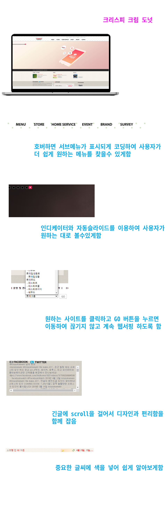

- Name : 김세인
- Birth : 2002. 05. 09
- Address : 서울시 강서구 화곡동
- Phone : 010-5256-2787
- Email : sein020509@naver.com
로딩중
Kim Sein
START & TENACITY
앞에 보이는 길처럼 '꾸준히' 달릴 준비가 되어있는 퍼블리셔 '김세인' 입니다.
시작하는 것은 쉬울지 몰라도 시작한것을 계속 하는것은 어렵다고 생각합니다.
'시작한일을 제대로 끝맺음하는 개발자가 되겠습니다'.
스크롤바를 내리면 작품을 감상할 수 있습니다.
ABOUT ME
VISION
고등학교를 졸업하고 하고싶은 일이 무엇인지 진정으로 고민해 보았습니다.
가장 먼저 떠오른것은 학교에서 JAVA시간에 게임을 수정하는 프로젝트를 했을 때 였습니다.
직접 코딩을 통해 온라인 상에 결과물을 만들어 내는 자체를 즐거워 했던것 같습니다.
웹 퍼블리셔가 되어서도 트렌드를 놓치지 않는것이 중요하다고 생각합니다.
늘 깨어있고 개성있는 사이트의 제작을 위해 노력하겠습니다.
WHAT CAN I DO?
심플하고 깔끔한 디자인을 좋아하며 사용자가 보기에 모던한 스타일의 작품을 잘 만든다고 생각합니다.
HTML과 CSS(SCSS)뿐만이아닌 JS도 잘 다룰수있는 개발자 입니다.
5개월 동안 준비과정을 마쳤다고 생각합니다. 이제 회사에 입사하여 꿈꿔왔던 소망을 이루는 직원이 되겠습니다.
- ZenCoding(EMMET) & SCSS
- Javascript & jQuery 로직구현
- Html을 이용한 페이지 구현
- 반응형 웹디자인
- 알고리즘을 이용한 로직 구현
- 페이지 디버깅
WORK STYLE
- 구조와 디자인, 기능을 분리한 MVC패턴을 구현
- 자바스크립트와 jQuery를 구현
- HTML5 시멘틱과 CSS3 웹페이지를 구현
다른 사람이 말하는 나
-
유진
넘어져도 포기하지 않는 사람고등학교 2학년때 친구들중 혼자만 전기기능사 실기시험에 불합격 했지만
포기하는 것이 아닌 방과후와 방학시간을 이용해 연습을 하였고 최종합격함
위 과정을 듣고 유진이는 '넘어져도 포기하지 않는 사람'이라 하였음 -
병호
힘들어도 할일은 하는사람고등학생때 통학시간 3시간 + 점심때는 쉬지 않고 급식도우미 + 방과후에는 자율학습과 자격증 실습을 함 다른 친구들보다 학교도 멀고 점심에 쉬지도 못했기에 불리했지만 따야하는 자격증을 모두 취득 하였고 높은 학업성적과 개근상을 얻었음 위 과정을 옆에서 지켜본 병호는 '힘들어도 할일은 하는사람'이라 하였음
-
우진
꾸준함의 대명사매일 저녁 가족들을 위해서 요리를 하였음
처음에는 하나도 할줄 몰랐지만 엄마의 레시피 + 인터넷 참고를 하였고 정확하게 계량하고 순서를 지켜 요리하려 노력함 지금은 밥 짓고 국 끓이기 정도는 쉽게 하는거 같음 위 과정을 우진이에게 말하자 본인은 상상도 못하는 일을 내가 한다며 '꾸준함의 대명사'라고 하였음
SKILL
탁월한 UX분석능력과 Emmet/Zencoding 활용
-
UX/UI 디자인
사용자의 Context와 Needs를 파악하고
Problem을 해결할 수 있는 Insight 도출 -
반응형 웹표준
시멘틱을 지향하는 HTML/CSS 작성능력 보유,
자바스크립트와 제이쿼리 기반의 로직 구현 가능
SASS 전처리기와 리액트 라이브러리 활용
-
Sass Preprocessor
협업 웹코딩의 필수 기술인 SCSS를 이용한
CSS 스타일링을 원활이 사용할 수 있습니다. -
반응형 웹표준
국내 프론트엔드 시장의 대세 리액트 코드구현,
자바스크립트와 제이쿼리 기반의 로직구현 가능
ABILITY
젠코딩
HTML5
CSS
jQuery
웹기획
디자인
95%
리더쉽
적극성
창조성
사교성
책임감
정직성
온라인 이력서
처음에는 단순한 흥미로 시작하였습니다.
하지만 그 흥미를 통해 작품을 만들어 나가면서 점점 제 실력을 키웠습니다.
이제는 제 실력을 증명할 때라고 생각합니다.
HTML5 & CSS3 시멘틱 페이지를 ZenCoding(EMMET)으로 코딩할 수 있습니다.
리뉴얼을 통해 더 깔끔하고 심플하게 보이게끔 하는 디자인 능력은 저의 최고의
장점중 하나입니다.
JS 플러그인을 사용에 그치지 않고 필요한 기능을 직접 구현할 수 있는 Javascript/jQuery 로직구현이 가능합니다.
새로운 코딩기법과 디자인을 배우는 것이 정말 즐겁습니다.

UX DESIGN
작품리스트
이전 다음내가 생각하는 사용자경험 - User Experience
UX의 정의에 대해서 알아보고, 다양한 UX의 사례들, 특히나 성공적인 UX라 불리는 사례들을 보면서
사용자 경험을 바탕으로 어떤 제품이나 서비스를 구축하는 것의 중요성을 깨달았다.
내가 생각하는 UX란, 사용자가 원하는 기능을 사용할 때 사용자가 불편함을 느끼지 않고 사용할 수 있도록 하고,
원하는 활동을 편리하게 제품이나 서비스를 이용하여 할 수 있도록 하는 것이라는 생각이 들었다.
사전적인 의미에서 UX란 사람의 여러 감각과 감정의 총합을 뜻하는데, 내가 생각하는 UX는 ‘불편함’이라는,
혹은 다르게 불릴 수도 있는 부정적인 감정을 최소화시키는 것이라는 생각이 든다.
AI가 추천해주는 나에게 맞는 동영상
디자인과 UX의 차이
- 1. 자전거 톱니바퀴
-
폐 자전거의 톱니바퀴를
깔끔한 디자인의 시계로 업사이클링한 사례
- 2. 사용하지 못하는 폐지
-
이제 더 이상 사용할 수 없는 폐지를
친환경적인 지갑으로 재탄생시킨 사례
PORTFOLIO
크리스피 크림 도넛(클론 사이트)
krispykreme clone site
기존 웹사이트를 참고화여 클론 사이트를 만들었습니다.
크리스피 크림의 컬러 아이덴티티를 사용하여 브랜드 이미지를 강조하였으며,
간결한 레이아웃으로 전달하고자 하는 내용을 보기 쉽게 배치하였습니다.
작업프로그램 : Photoshop, Visual Studio Code
100% 개인 작업

T1(리뉴얼 디자인)
T1 Renewal Design
기존 웹사이트의 개선사항을 찾아 메인페이지를 리뉴얼 디자인하였습니다.
한번에 여러개의 사진이 슬라이드 되어 사용자의 시청에 불편함이 있었습니다.
이를 하나의 슬라이드로 바꾸어 몰두할수있도록 바꾸었습니다.
작업프로그램 : Photoshop, Visual Studio Code
100% 개인 작업

소니(리뉴얼 디자인)
SONY Renewal Site Design
기존 웹사이트를 참고화여 리뉴얼 사이트를 만들었습니다.
다양한 종류의 제품이 다채롭게 보이도록 슬라이드 처리하였습니다.
메뉴에 호버 하였을때 활성화 되게 하여 사용자가 쉽게 볼수있도록 하였습니다.
작업프로그램 : Photoshop, Illustrator, Visual Studio Code
100% 개인 작업
국립현대미술관(클론 사이트)
MMCA Clone Site Design
기존 웹사이트를 참고화여 클론 사이트를 만들었습니다.
하얀색을 메인 컬러로 사용하여 박물관의 이미지를 심플하게 표현하였습니다.
다양한 콘텐츠를 사용하여 사이트가 지루해보이지 않도록 하였습니다.
작업프로그램 : Photoshop, Illustrator, Visual Studio Code
100% 개인 작업

필요한 기능을 직접 javascript/jquery 로직 구현
‘스타일을 창조하여 그것을 섬세한 디자인으로 탈바꿈 시키고싶다’ 는 마음으로 매일 노력하고 있습니다.
HTML5 & CSS3 시멘틱 페이지를 SCSS, ZenCoding(EMMET)으로 작성할 수 있습니다.
클라이언트의 요구사항을 적극적으로 반영하는 UI/UX 디자인 능력은 저의 최고의 장점중 하나입니다.
JS 플러그인을 사용에 그치지 않고 필요한 기능을 직접 구현할 수 있는 Javascript/jQuery 로직구현이 가능합니다.
새로운 코딩기법과 디자인을 배우는 것이 정말 즐겁습니다.
for문과 다중 if문의 결합한 로직 구현
SASS, Emmet 활용
페이지 전체의 계층구조를 입체적으로 분석할 수 있는
실무형 코딩기법 Emmet을 사용할 수 있어 업무시간을 단축시킬 수 있을뿐 아니라,
유지보수도 더욱 쉽고 정확하게 처리할 수 있습니다.
SCSS의 가장 큰 장점인 변수와 Mixin 기능을 적극 활용하여
CSS 스타일링을 할 수 있습니다.
Sprite-Image와 IR(Image Replacement)기법에 능숙
id, class를 남발하지 않고 원하는 요소를 셀렉팅할 수 있는 능력,
CSS3 Transform, Transition, Keyframes을 이용한 애니메이션 효과 구현
직접 구현한 슬라이드
-
좌우이동 슬라이드
슬라이드 구현에 적합한 ul,li,a 태그와 flxe를 사용하여 UI를 구현하였습니다.
슬라이드 보기
또한 자바스크립트로 position의 lef값을 동적으로 변화시켜 이동하도록 하였습니다. 플러그인 없이 직접 구현하였습니다.
-
키프레임 무한 슬라이드
이전, 다음 기능을 가진 업그레이드 된 슬라이드로서 사용자 편의성을 향상되었습니다. 제이쿼리의 fadeIn(), fadeOut() API를 이용하여 코드를 구현하였습니다. 플러그인 없이 직접 구현하였습니다.
슬라이드 보기 -
fade 슬라이드
시작, 정지기능이 장착된 슬라이드로서 일관성있게 한쪽 방향에서 다음 슬라이드가 노출되는 기능을 append() API와 콜백함수의 개념을 접목하여 구현하였습니다. 플러그인 없이 직접 구현하였습니다.
슬라이드 보기
CONTACT
귀사에 입사를 지원합니다.
저의 웹퍼블리싱 이야기 입니다.
질문을 선택하시면 정리된 답변을 보실수 있습니다.
- 1. html5의 가장 큰 특징은 무엇일까요? 화살표
-
가장 큰 특징은 문서의 크기가 작아진것 입니다. 기존의 DOCTYPE은 SGML 기반이었기 때문에 DTD를 명시해야 했으나, HTML5에서는 브라우저가 표준모드로 작동되게 하는 역할만 하면 되기때문에 아주 간소화해졌습니다.
- 2. 웹표준, 웹접근성, 시멘틱웹에 대해 설명해 주세요. 화살표
-
먼저 웹 표준이란, 웹 표준화 단체(W3C)가 권고한 표준안을 뜻하며 용도에 맞는 태그 사용과 CSS를 분리(구조와 표현의 분리)하여 작업하는 것을 말합니다. 웹 접근성이란 모두가 차별없이 웹에서 제공하는 정보를 이용할 수 있도록 하는 것입니다. 시맨틱 웹은 컴퓨터가 정보 자원의 뜻을 이해하고 논리적 추론까지 하는 차세대 지능형 웹입니다.
- 3. 자바스크립트 라이브러리 사용시 가장 큰 장점은? 화살표
-
가장 큰 장점은 멀티 브라우져 지원입니다. 어느 브라우져에서나 동일하게 작동을 한다는 것은 자바스크립트 개발자로서는 너무나 매력적인 일입니다. IE와 다른 브라우져들은 자바스크립트에서 지원하는 기능이 다르거나, 같은 기능이 있더라도 사용 방법이 다른 경우 jquery에서는 이것을 전부다 해결해주기에 가장 큰 장점이라 생각합니다.
- 4. .setInterval() 함수에 대해 설명하시오. 화살표
-
.setInterval() 함수는 일정한 시간 간격으로 작업을 수행하기 위해서 사용합니다. clearInterval 함수를 사용하여 중지할 수 있습니다. 주의할 점은 일정한 시간 간격으로 실행되는 작업이 그 시간 간격보다 오래걸릴 경우 문제가 발생할 수 있습니다.
- 5. CSS 미디어쿼리는 어떤 역할을 수행하는지 답하시오~! 화살표
-
미디어쿼리는 화면 해상도, 기기 방향 등의 조건으로 HTML에 적용하는 스타일을 전환할 수 있는 CSS3의 속성 중 하나입니다. 반응형 웹 디자인에서는 미디어 쿼리를 사용해 적용하는 스타일을 기기마다(화면 크기마다) 전환할 수 있습니다.
더욱 궁금하신 점은 면접시 말씀드리겠습니다. 감사합니다~!
본 페이지는 저의 개인 포트폴리오용으로 제작되었으며, 상업적인 목적과 관련이 없음을 알려드립니다.